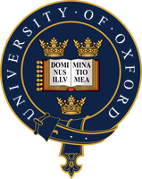
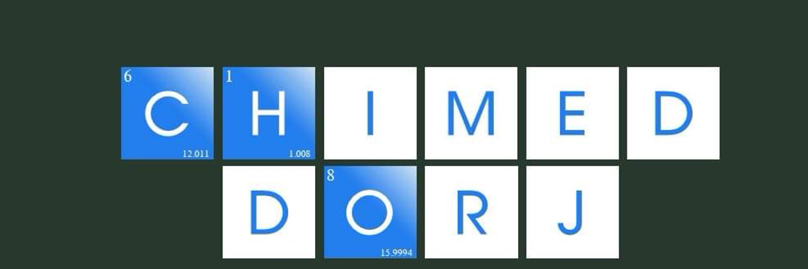

Chimeddorj
MUNKHJARGAL
Мөнхжаргалын Чимэддорж
I am a settled citizen — the frayed hem of a lambskin deel weathered by the steppe wind, now tethered to the grid of hot water and information.

I am a settled citizen — the frayed hem of a lambskin deel weathered by the steppe wind, now tethered to the grid of hot water and information.
Chimeddorj Munkhjargal is an economist and public policy researcher who holds a Bachelor's (2005) and Master's (2011) degree in Business Administration from the National University of Mongolia, and a Master of Public Policy (2018) from the University of Oxford. Since 2025 he has been pursuing a PhD in International Relations at the National University of Mongolia.
He has spent more than a decade researching economic competitiveness, employment, and the efficiency of government investment. He initiated Mongolia's long-term labor market forecasting model along with national surveys on graduate and youth employment, and served as Director of the Institute of Labor Research under the Ministry of Labor.
Since 2017 he has been elected three times to the Democratic Party's National Policy Council. Since 2023 he has served as economic policy advisor to the Democratic Party caucus in the State Great Khural, and since 2024 as the caucus's Senior Advisor. Since 2026 he has chaired the governing board of the Gerege Policy Institute, affiliated with the Democratic Party. He has led the renewal of the party's platform and drafted the content of the 2026 "Democracy Gerege" policy document. He is the author of "Principles of Reform" (Monsudar, 2011). In recent years his work has centered on the energy transition and renewable energy policy.
National University of Mongolia, School of Political Science, International Relations and Public Administration. PhD program in International Relations.

Master of Public Policy (MPP).
National University of Mongolia, Management program.
National University of Mongolia, School of Economics, Management major (2001–2005).

A work formulating principles aimed at deepening the democratic process and building a naturally harmonious society. ISBN 978-9996-2-0574-3.

Drafted the content of a document renewing Democratic Party membership, incorporating national values and the ethos of freedom.
A translation of Milton Friedman's classic essay — bringing a foundational free-market text to Mongolian readers.
Read (Mongolian) →An analysis of the crisis surrounding coal theft and the risks to parliamentary governance.
Read (Mongolian) →A policy essay on Democratic Party reform.
Read (Mongolian) →Includes "Tribute," "Heaven's Hour," "On the Day of Honoring the Repressed," and "An Election to Bring Accountability to a Government in Crisis," among others.
All articles on baabar.mn (Mongolian) →An analysis of the four types of FDI and Mongolia's investment structure: macro stability and infrastructure matter more than tax breaks.
Original article (Mongolian) →A 20-year investment policy proposal for shifting away from a bank monopoly and high interest rates toward a knowledge-based economy.
Original article (Mongolian) →A talk analyzing the cultural profile of Mongolians through Hofstede's cultural dimensions — with full transcript, key ideas, and video.
Read full transcript →A full lecture on how political decisions shape economic outcomes — key ideas, video, and full transcript.
Read full transcript →A talk on fair labor, property rights, and competitive markets — full transcript.
Read full transcript →An interview on the roots of the trade war, energy geopolitics, and the turning tide of globalization — full transcript.
Read full transcript →A talk on how energy, artificial intelligence, and materials technology are reshaping business models — key ideas, video, full transcript.
Read full transcript →A one-hour interview on education, corruption, and the limits of the state — full transcript.
Read full transcript →A 55-minute interview on the three goals of the 2016 reform, flaws in the party charter, and money in internal elections — full transcript.
Read full transcript →The Gobi is lyrical, the Gobi is majestic.
Its peaks gleam like hoarfrost, shimmer like mare's milk poured in offering.
By day the scent of green grass drifts across the boundless plain; by night a crescent moon lingers at the edge of the sky.
